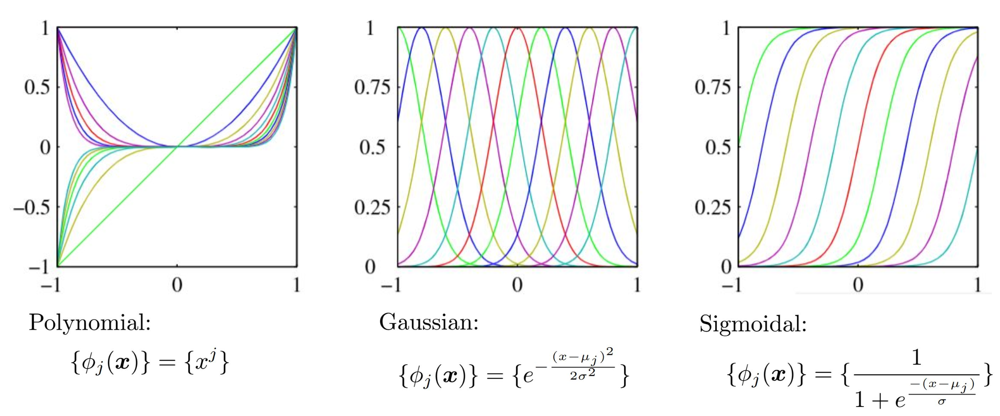
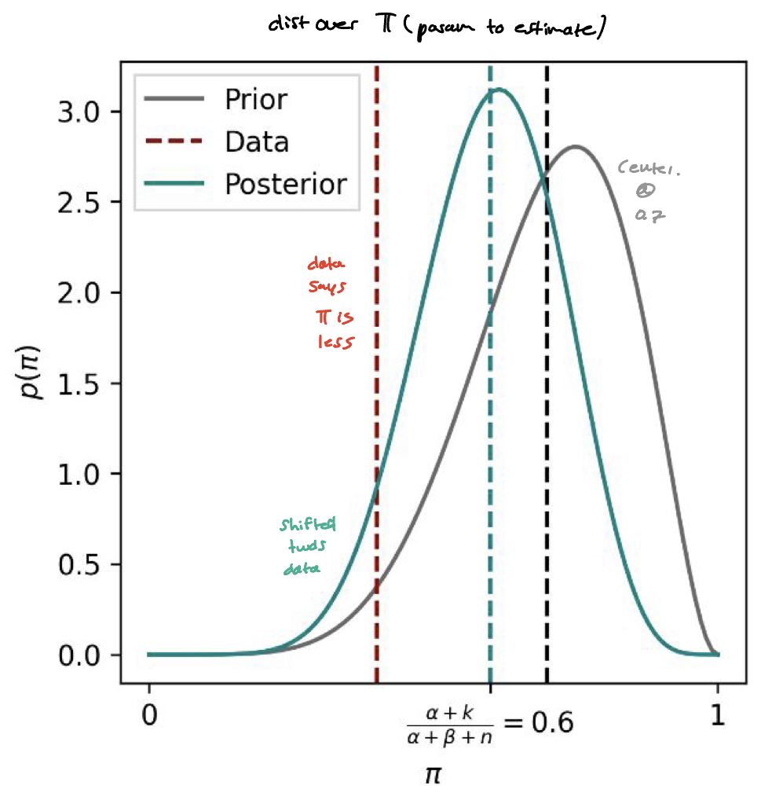

Linear basis function models extend linear regression models by allowing combinations of non-linear functions.
ExamplesExamples of non-linear basis functions: Polynomial, Gaussian, Sigmoidal
When you might use each:
Polynomial: smooth data w’ non-linear relationships
Gaussian: capture local features in data
Sigmoidal: sharp transitions in data
The “linear” in “linear basis function” indicates that the model is still linear in terms of the weights (i.e. transform features). However, the output is non-linear in terms of the input features.
A basis function is specific case of feature mapping.
What an SVM does differently is that it introduces kernel functions to more easily work with basis functions (feature mappings).
Modelling w’ N.L.B.F’s
ExampleThe true underlying model is non-linear (black line)
We can represent this line with:
y^=⟨w,ϕ(x)⟩
ϕ(x)=[1xx2x3x5]
w=[0.2−10.90.7−0.2]
And add some noise to draw samples:
yn=y^+η∼N
Using Prior Knowledge
Ex 1 (setup)
Want to know: will a given day be windy? So if we’re given a new point (+), we want to guess, based on the underlying function, if it’s windy.
The true underlying model is non-linear (black line)
Assume y is follows a Bernoulli distribution that depends on π (ie: if π=0.5, there’s a 50/50 chance that a given day is windy.
Using MLE, we maximize the likelihood of π given the observations. This estimate just turns out to be the % of days that are windy from our observations.
In General
Bayesian Update
Bayesian Update
Combine likelihood (new evidence) with prior belief ⇒ posterior distribution.
posterior distribution (likelihood of π; given prior & likelihood)
Ex 1 (Prior Knowledge as Beta dist.)
Suppose historical data suggests that π=0.7
For a Bernoulli model, a good choice is the beta distribution. α,β capture both our knowledge & uncertainty of π. If you know that π=0.7, scale α,β to say how confident you are.
So this new distribution takes into account the prior one, but also the seen data.
The new information, captured by the likelihood “refines” the prior belief ⇒ new Posterior Distribution.
MAP Estimate
MLE strictly maximizes the likelihood, p(y∣π)
MAP is maximizing the posterior (prior x likelihood)
Maximim-A Posterior
Finds the parameter π that maximizes the posterior
π^MAP=argmaxπp(π∣y)
Ex 1: MAP of Beta DistributionThe * represents updated parameters
Applied to Linear Regression
We assume a Prior on the weights (hence, multivariate)
p(w∣X,y,σ2)∝p(y∣X,w,σ2)p(w)
Ex 1
If we let:
p(w)=N(0,Σ)
p(y∣X,w)=N(wTX,σ2)
Then, the posterior distribution is also a gaussian:
p(w∣X,y)=N(wˉ,A−1)
It depends on Σ,σ2:
mean: wˉ=A−1σ21XTy
precision matrix: σ21XTX+Σ−1
MAP
w^MAP=argmaxwp(w∣X,y,σ2)
Ridge Regression as Imposing a Prior on w
If we let μ0=0, Σ−1=λI
Derivation
Ridge Regression == imposing a gaussian prior (centered at 0) on the weights.
Incorporating a prior as == stabilizing the weights
With a bad prior, MAP could be worse than MLE. It’s important to have a strong belief about domain knowledge.
However, with bayesian we can be more specific than R.R:
Recall, we’re using a combo of non-linear-basis functions.
Ridge Regression:
penalizes all weights, uniformly.
MAP:
flexible priors.
Does not penalize all weights uniformly.
Could be worse with a poor choice of prior
Bayesian Linear Regression
Classical vs. Bayesian Linear Regression
Type
Produces
Assumes
Predictions
Captures Uncertainty in
Classical
Single point estimates of w
There’s a single, best w.
Makes predictions with the point estimate of w
Observed Data
Bayesian
(posterior) Distribution for w; (i.e. our belief of the weights)
w is a random variable, with its own distribution.
When making predictions with it, we consider all possible weights
Observed Data + Model Params
Both MAP & MLE are classical L.R
MLE: maximizes the likelihood over all w.
MAP: maximizes the posterior over all w.
Problem:classical L.R does not account for uncertainty in w. This leads to over-confident predictions, poor generalization, specifically for noisy data.
Bayesian L.R
Predictive-Posterior-Distribution: Distribution of predictions overall possiblew.
p(y∗∣x∗,X,y)=∫wp(y∗∣x∗,w)p(w∣X,y)dw
x∗ — specific sample feature (distribution).
y∗ — output for this feature (distribution).
X, y — training data/outputs.
p(w∣X,y) is the posterior distribution (initially the prior)
The more uncertain we are, the larger the predictive variance for y∗
Ex 1
For our specific model (all our gaussian).
p(y∗∣x∗,w)=exp(−2σ2y∗−x∗Tw)
p(w∣X,y)=exp(−21(w−w)TA(w−w))
p(y∗∣x∗,X,y)=N(x∗Tw,σ2+x∗TA−1x∗)
σ2: captures noise in distribution
A: captures uncertainty in weight estimates
Sequential bayesian updating
(estimating params for L.R)
Sequential Update
Updating as new data arrives, without having to recompute from scratch.
Useful for online learning.
Consider a synthetic dataset generated from a function with 2 parameters:
After we’ve observed a 2nd data point, (−0.5,−0.8)
After 20 datapoints:
L09
Recommend and justify application of logistic regression in appropriate real-world scenarios, as an alternative to linear regression and binary classification.
Explain the logistic regression hypothesis class using correct terminology, including conditional probability, sigmoid function, and linear predictor.
Sketch the decision boundary of a logistic regression predictor in a low-dimensional setting for different thresholds and parameters.
Defend the cross-entropy loss function used in logistic regression.
Explain the parametrization and hypothesis class of multinomial regression with reference to the softmax function.
Implement and apply iterative optimization algorithms including gradient descent, stochastic gradient descent, and Newton’s Method
Interpret the meaning of coefficients of a learned logistic regression model.


{kind=link}
{kind=link}


{kind=link}
{kind=link}

{kind=link}
{kind=link}


{kind=link}